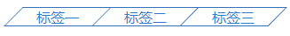

<!DOCTYPE html>
<html>
<head><meta name="generator" content="Hexo 3.8.0">
  <meta charset="utf-8">
  

  
  <title>博客</title>
  <meta name="viewport" content="width=device-width, initial-scale=1, maximum-scale=1">
  <meta property="og:type" content="website">
<meta property="og:title" content="博客">
<meta property="og:url" content="http://yoursite.com/index.html">
<meta property="og:site_name" content="博客">
<meta property="og:locale" content="default">
<meta name="twitter:card" content="summary">
<meta name="twitter:title" content="博客">
  
    <link rel="alternate" href="/atom.xml" title="博客" type="application/atom+xml">
  
  
    <link rel="icon" href="/favicon.ico">
  
  
    <link href="//fonts.googleapis.com/css?family=Source+Code+Pro" rel="stylesheet" type="text/css">
  
  <link rel="stylesheet" href="/css/style.css">
</head>
</html>
<body>
  <div id="container">
    <div id="wrap">
      <header id="header">
  <div id="banner"></div>
  <div id="header-outer" class="outer">
    <div id="header-title" class="inner">
      <h1 id="logo-wrap">
        <a href="/" id="logo">分享创造快乐，有益健康哦!</a>
      </h1>
      
      <h2 id="subtitle-wrap">
        <a href="/" id="subtitle">优雅，简洁，创新！ —— 2019.04.05</a>
      </h2>
      
    </div>
    <div id="header-inner" class="inner">
      <nav id="main-nav">
        <a id="main-nav-toggle" class="nav-icon"></a>
        
        <a class="main-nav-link" href="/">Home</a>
        
        <a class="main-nav-link" href="/archives">Archives</a>
        
      </nav>
      <nav id="sub-nav">
        
        <a id="nav-rss-link" class="nav-icon" href="/atom.xml" title="RSS Feed"></a>
        
        <a id="nav-search-btn" class="nav-icon" title="Search"></a>
      </nav>
      <div id="search-form-wrap">
        <form action="//google.com/search" method="get" accept-charset="UTF-8" class="search-form"><input type="search" name="q" class="search-form-input" placeholder="Search"><button type="submit" class="search-form-submit">&#xF002;</button><input type="hidden" name="sitesearch" value="http://yoursite.com"></form>
      </div>
    </div>
  </div>
</header>
      <div class="outer">
        <section id="main">
  
    <article id="post-h5tag" class="article article-type-post" itemscope itemprop="blogPost">
  <div class="article-meta">
    <a href="/2019/04/09/h5tag/" class="article-date">
  <time datetime="2019-04-09T08:06:16.000Z" itemprop="datePublished">2019-04-09</time>
</a>
    
  </div>
  <div class="article-inner">
    
    
      <header class="article-header">
        
  
    <h1 itemprop="name">
      <a class="article-title" href="/2019/04/09/h5tag/">梯形标签的设计</a>
    </h1>
  

      </header>
    
    <div class="article-entry" itemprop="articleBody">
      
        <p><nav class="tabs"><div class="tab"><div>标签一</div></div><div class="tab"><div>标签二</div></div><div class="tab"><div>标签三<div class="last-tab-bluff"></div></div></div></nav></p>
<style>
  .tabs {
    display: flex;
    justify-content: flex-end;
    margin: 11px 7px 0 auto;
  }
  .tab {
    z-index: 100;
    cursor: pointer;
    color: #2c7bcb;
    white-space: nowrap;
    border-width: 1px 0 1px 1px;
    border-style: solid;
    border-color: #3670bb;
    width: 98px;
    height: 20px;
    text-align: center;
    transform: skewX(-44.5deg);
    position: relative;
  }
  .tab:hover,
  .tab:hover .last-tab-bluff {
    color: white;
    background-color: #2691f0;
  }
  .tab *:not(.last-tab-bluff) {
    position: absolute;
    top: 0;
    left: 0;
    right: 0;
    bottom: 0;
    transform: skewX(44.5deg); /* 这个很有必要，否则字会变形 */
  }
  .tab:last-child .last-tab-bluff {
    border-width: 0 1px 1px 0;
    border-style: solid;
    border-color: #3670bb;
    position: absolute;
    top: -1px;
    right: -11px;    /* 约等于 height*sin(deg) */
    left: 20px;    /* 尽可能长 */
    bottom: -1px;
    z-index: -1;
  }
</style>


<p>这样的标签很常见，如果你宁愿使用很low的切图，可以略过本文——实际上切图也很复杂。废话不多说，下面是设计思想：</p>
<p>核心代码（一）：（原理一看就明白）</p>
<figure class="highlight html"><table><tr><td class="gutter"><pre><span class="line">1</span><br><span class="line">2</span><br><span class="line">3</span><br><span class="line">4</span><br><span class="line">5</span><br><span class="line">6</span><br><span class="line">7</span><br><span class="line">8</span><br><span class="line">9</span><br><span class="line">10</span><br><span class="line">11</span><br><span class="line">12</span><br><span class="line">13</span><br><span class="line">14</span><br><span class="line">15</span><br><span class="line">16</span><br><span class="line">17</span><br></pre></td><td class="code"><pre><span class="line"><span class="tag">&lt;<span class="name">div</span> <span class="attr">class</span>=<span class="string">"tab"</span>&gt;</span></span><br><span class="line">    <span class="tag">&lt;<span class="name">div</span>&gt;</span>标签一<span class="tag">&lt;/<span class="name">div</span>&gt;</span></span><br><span class="line"><span class="tag">&lt;/<span class="name">div</span>&gt;</span></span><br><span class="line"><span class="tag">&lt;<span class="name">style</span>&gt;</span><span class="undefined"></span></span><br><span class="line"><span class="undefined">    .tab &#123;</span></span><br><span class="line"><span class="undefined">        transform: skewX(-44.5deg);</span></span><br><span class="line"><span class="undefined">        position: relative;    </span></span><br><span class="line"><span class="undefined">    &#125;</span></span><br><span class="line"><span class="undefined">    .tab&gt;div&#123;</span></span><br><span class="line"><span class="undefined">        position: absolute;</span></span><br><span class="line"><span class="undefined">    	top: 0;</span></span><br><span class="line"><span class="undefined">    	left: 0;</span></span><br><span class="line"><span class="undefined">    	right: 0;</span></span><br><span class="line"><span class="undefined">    	bottom: 0;</span></span><br><span class="line"><span class="undefined">    	transform: skewX(44.5deg); /* 这个 【反向倾斜】 很有必要，否则字会变形 */</span></span><br><span class="line"><span class="undefined">    &#125;</span></span><br><span class="line"><span class="undefined"></span><span class="tag">&lt;/<span class="name">style</span>&gt;</span></span><br></pre></td></tr></table></figure>
<p>然后加上边框等，效果如下：</p>
<p></p>
<p>这时要对最后一个元素做额外处理：加上一个填充bluff</p>
<p>核心代码（二）：</p>
<figure class="highlight html"><table><tr><td class="gutter"><pre><span class="line">1</span><br><span class="line">2</span><br><span class="line">3</span><br><span class="line">4</span><br><span class="line">5</span><br><span class="line">6</span><br><span class="line">7</span><br><span class="line">8</span><br><span class="line">9</span><br><span class="line">10</span><br><span class="line">11</span><br><span class="line">12</span><br><span class="line">13</span><br><span class="line">14</span><br><span class="line">15</span><br><span class="line">16</span><br><span class="line">17</span><br></pre></td><td class="code"><pre><span class="line"><span class="tag">&lt;<span class="name">div</span> <span class="attr">class</span>=<span class="string">"tab"</span>&gt;</span></span><br><span class="line">    <span class="tag">&lt;<span class="name">div</span>&gt;</span>标签三<span class="tag">&lt;<span class="name">div</span> <span class="attr">class</span>=<span class="string">"last-tab-bluff"</span>&gt;</span><span class="tag">&lt;/<span class="name">div</span>&gt;</span><span class="tag">&lt;/<span class="name">div</span>&gt;</span></span><br><span class="line"><span class="tag">&lt;/<span class="name">div</span>&gt;</span></span><br><span class="line"><span class="tag">&lt;<span class="name">style</span>&gt;</span><span class="undefined"></span></span><br><span class="line"><span class="undefined">.last-tab-bluff &#123;</span></span><br><span class="line"><span class="undefined">    border-width: 0 1px 1px 0;      </span></span><br><span class="line"><span class="undefined">    top: -1px;   /* -1 刚好为边框大小 */</span></span><br><span class="line"><span class="undefined">    right: -11px;    /* 约等于 height*sin(deg)*0.5+2 */</span></span><br><span class="line"><span class="undefined">    left: 20px;    /* 尽可能长，避免不足 */</span></span><br><span class="line"><span class="undefined">    bottom: -1px;  /* -1 刚好为边框大小 */</span></span><br><span class="line"><span class="undefined">    z-index: -1;    /* 这个很关键哦，不然 bluff 会遮挡*/</span></span><br><span class="line"><span class="undefined">&#125;</span></span><br><span class="line"><span class="undefined">/*hover 样式加上 bluff 的选择器：*/</span></span><br><span class="line"><span class="undefined">.tab:hover,.tab:hover .last-tab-bluff &#123;</span></span><br><span class="line"><span class="undefined">    /**/</span></span><br><span class="line"><span class="undefined">&#125;</span></span><br><span class="line"><span class="undefined"></span><span class="tag">&lt;/<span class="name">style</span>&gt;</span></span><br></pre></td></tr></table></figure>

      
    </div>
    <footer class="article-footer">
      <a data-url="http://yoursite.com/2019/04/09/h5tag/" data-id="cju9l730d00011ovlcj24gsp2" class="article-share-link">Share</a>
      
      
    </footer>
  </div>
  
</article>


  
    <article id="post-echarts-chapter-1" class="article article-type-post" itemscope itemprop="blogPost">
  <div class="article-meta">
    <a href="/2019/04/08/echarts-chapter-1/" class="article-date">
  <time datetime="2019-04-08T01:17:47.000Z" itemprop="datePublished">2019-04-08</time>
</a>
    
  </div>
  <div class="article-inner">
    
    
      <header class="article-header">
        
  
    <h1 itemprop="name">
      <a class="article-title" href="/2019/04/08/echarts-chapter-1/">echarts--入门（一）</a>
    </h1>
  

      </header>
    
    <div class="article-entry" itemprop="articleBody">
      
        <script src="https://cdn.bootcss.com/echarts/4.2.1-rc1/echarts.js"></script>

<p>前端时间做了一个数据监控的项目，里面有很多数据可视化的需求，数据可视化我一直都很感兴趣，但是没有机会实践，所以项目完成后就好好总结一下。</p>
<h1 id="饼图"><a href="#饼图" class="headerlink" title="饼图"></a>饼图</h1><p>饼图应该是最常见的图了，配置饼图时有个很重要的属性roseType，设置饼图是否以玫瑰图（<a href="https://www.sohu.com/a/221082306_416207" target="_blank" rel="noopener">南丁格尔图</a>）的方式显示。玫瑰图就是另一种饼图，会将数据的比例夸大。roseType：radius/area 可以理解为3次方夸大和2次方夸大。并不是所有场景都可以使用玫瑰图的，实际数据通常会使你的玫瑰图并不那么好看，通常以下2种情况才使用玫瑰图：</p>
<ul>
<li><p>需要突出主要的因素（运用夸大比例的特性，将最主要的因素凸显）</p>
</li>
<li><p>比例都很相近，或类目比较多（这两种情况，普通饼图看不出来差异，玫瑰图的半径表示比例特别适合这种情况）</p>
</li>
</ul>
<p><div id="pie-2" style="height:550px;"></div></p>
<p><div style="margin-top:-36px"><br>    <button onclick="toPie()">普通饼图</button><button onclick="toRose()">玫瑰饼图</button><button onclick="sort()">排序</button><button onclick="unSort()">取消排序</button><br></div></p>
<script>
    (function(){
        var data1 = [];
    for (var i = 1; i <= 7; i++) {
        data1.push({
            name: 'data' + i,
            value: Math.round(Math.random() * 1000)+3000
        })
    }
    let data2=[];
    for (var i = 1; i <= 100; i++) {
        data2.push({
            name: 'data' + i,
            value: Math.round(Math.random() * 1000)
        })
    }
    var option = {
        backgroundColor: '#2c343c',   
        tooltip: {
            show:true,
            formatter: " {c} ({d}%)"
        },
        series: [{            
            type: 'pie',
            roseType: 'radius',
            center: ['25%', '50%'],
            radius:'60%',
            data: data1,
            label: {
              show: false
           }
       },
         {            
            type: 'pie',
            roseType: 'radius',
            radius:'60%',
            center: ['75%', '50%'],
            data: data2,
            label: {
              show: false
           }
       }]
   }   
   var roseChart = echarts.init(document.getElementById('pie-2'));
    roseChart.setOption(option, true);
    window.toRose= function() {
        option.series[0].roseType = 'radius';
        option.series[1].roseType = 'radius';
        roseChart.setOption(option, true);
    }
    window.toPie =function() {
        option.series[0].roseType = undefined;
        option.series[1].roseType = undefined;
        roseChart.setOption(option, true);
    }    
     window.sort= function() {
        var data1Copy = data1.slice().sort(function (a, b) {
            return a.value - b.value;
        })
        option.series[0].data = data1Copy;
        var data2Copy = data2.slice().sort(function (a, b) {
            return a.value - b.value;
        })
        option.series[1].data = data2Copy;
        roseChart.setOption(option, true);
    }
    window.unSort =function () {    
        option.series[0].data = data1;
        option.series[1].data = data2;
        roseChart.setOption(option, true);
    }
    })()
    </script>


<h1 id="旭日图"><a href="#旭日图" class="headerlink" title="旭日图"></a>旭日图</h1><p>饼图只能展示简单数据的比例关系，旭日图却可以展示多层级的比例。</p>
<p><div id="sun" style="height:500px"></div></p>
<script>
    (function (sunData) {
        sunData[0].children[0].itemStyle = {
                color: 'white'
            },
            sunData[0].children[0].label = {
                color: 'red'
            }
        var sunChart = echarts.init(document.getElementById('sun'));
        sunChart.setOption({
            backgroundColor: '#2c343c',
            tooltip: {
                fomatter: "{b} : {c} ({d}%)"
            },
            series: [{
                type: 'sunburst',
                roseType: 'radius',
                center: ['50%', '50%'],
                nodeClick: false,
                name: '旭日图示例',
                radius: ['10%', '66%'],
                levels: [{    
                }, {
                    itemStyle: {
                        color: 'yellow'    
                    },
                    label: {
                        color: 'blue'
                    }
                }, {    
                }],    
                data: sunData,
            }]
        })
    })([{
        name: '类目一',
        children: [{
                name: 'AA',
                children: [{
                    name: 'a',
                    value: 5
                }, {
                    name: 'b',
                    value: 7
                }]
            },
            {
                name: 'BB',
                children: [{
                    name: 'a',
                    value: 30
                }, {
                    name: 'b',
                    value: 22
                }]
            },
            {
                name: 'CC',
                children: [{
                    name: 'a',
                    value: 12
                }, {
                    name: 'b',
                    value: 13
                }]
            }
        ]
    }, {
        name: '类目二',
        children: [{
                name: 'AA',
                children: [{
                    name: 'a',
                    value: 22
                }, {
                    name: 'b',
                    value: 13
                }]
            },
            {
                name: 'BB',
                children: [{
                    name: 'a',
                    value: 3
                }, {
                    name: 'b',
                    value: 5
                }]
            },
            {
                name: 'CC',
                children: [{
                    name: 'a',
                    value: 3
                }, {
                    name: 'b',
                    value: 4
                }]
            }
        ]
    }, {
        name: '类目三',
        children: [{
                name: 'AA',
                children: [{
                    name: 'a',
                    value: 12
                }, {
                    name: 'b',
                    value: 9
                }]
            },
            {
                name: 'BB',
                children: [{
                    name: 'a',
                    value: 14
                }, {
                    name: 'b',
                    value: 11
                }]
            },
            {
                name: 'CC',
                children: [{
                    name: 'a',
                    value: 6
                }, {
                    name: 'b',
                    value: 12
                }]
            }
        ]
    }]);
</script>
传入数据格式：

<figure class="highlight plain"><table><tr><td class="gutter"><pre><span class="line">1</span><br><span class="line">2</span><br><span class="line">3</span><br><span class="line">4</span><br><span class="line">5</span><br><span class="line">6</span><br><span class="line">7</span><br><span class="line">8</span><br><span class="line">9</span><br><span class="line">10</span><br><span class="line">11</span><br><span class="line">12</span><br><span class="line">13</span><br><span class="line">14</span><br><span class="line">15</span><br><span class="line">16</span><br><span class="line">17</span><br><span class="line">18</span><br></pre></td><td class="code"><pre><span class="line">data:[ // 多个树形数据，(图中越靠内圈，数据层级越高。)</span><br><span class="line">    &#123;</span><br><span class="line">        name:&apos;类目一&apos;,</span><br><span class="line">        // 没有value时，默认为所有children的value之和</span><br><span class="line">        children:[ ... ], </span><br><span class="line">        // 其他配置</span><br><span class="line">    &#125;,</span><br><span class="line">    &#123;</span><br><span class="line">        name:&apos;类目二&apos;,</span><br><span class="line">        value:50，</span><br><span class="line">        children:[&#123;</span><br><span class="line">            name:&apos;b1&apos;</span><br><span class="line">            value:8  // children里面的value之和，一般不大于上面的50，</span><br><span class="line">            // 如果大于，虽不会报错，但图上已体现不出超出的部分！</span><br><span class="line">        &#125;]       </span><br><span class="line">        // ...</span><br><span class="line">    &#125;</span><br><span class="line">]</span><br></pre></td></tr></table></figure>

旭日图的样式：

可以整个图添加样式（series中），可以按层添加样式（ series的levels中），可以单个节点添加样式（series的data中），很遗憾目前没有按树添加样式的，这样的需求只能一个个设置data了。

# <h1>直角坐标和极坐标下的折线图，柱状图，散点图</h1>

2种坐标系看似差别很大，其实本质是一样的。

3种图，都是要先定义好坐标，在坐标基础上进行数据可视化绘制。

所以<span style="color:red">将他们放在一起，希望能带来最直观的感悟。</span>

<div id="grid-bar" style="height:500px"></div>
<script>
(function(){    
    let data = [4, 7, 5, 6, 1, 3,2];
    let categories = ['Mon', 'Tue', 'Wed', 'Thu', 'Fri', 'Sta', 'Sun'];
    var chartEle = document.getElementById('grid-bar');
    let chart = echarts.init(chartEle);
    let option = {
        backgroundColor: '#eee',
        polar: {
            center: ['75%', '50%'],
            radius:'60%'
        },
        grid: {
            left: 10,
            right: '55%',
            containLabel:true
        },
        xAxis: {
            type: 'category',
            data: ['Mon', 'Tue', 'Wed', 'Thu', 'Fri', 'Sta', 'Sun']
        },
        yAxis: {},
        angleAxis: {
            startAngle: 0,
            type: 'category',
            data: ['Mon', 'Tue', 'Wed', 'Thu', 'Fri', 'Sta', 'Sun']
        },
        tooltip:{
            show:true,
        },
        radiusAxis: {},
        series: [{
            coordinateSystem: 'polar',
            type: 'line',
            data: data,
        }, {
            coordinateSystem: 'polar',
            type: 'effectScatter',
            data: data,
        }, {
            coordinateSystem: 'polar',
            type: 'bar',
            data: data,
        }, {
            type: 'line',
            data: data,
        }, {
            type: 'effectScatter',
            data: data,
        }, {
            type: 'bar',
            data: data,
        }]
    }
    chart.setOption(option);
})()
</script>


<p>源码片段：</p>
<figure class="highlight plain"><table><tr><td class="gutter"><pre><span class="line">1</span><br><span class="line">2</span><br><span class="line">3</span><br><span class="line">4</span><br><span class="line">5</span><br><span class="line">6</span><br><span class="line">7</span><br><span class="line">8</span><br><span class="line">9</span><br><span class="line">10</span><br><span class="line">11</span><br><span class="line">12</span><br><span class="line">13</span><br></pre></td><td class="code"><pre><span class="line">series: [&#123;</span><br><span class="line">            coordinateSystem: &apos;polar&apos;,</span><br><span class="line">            type: &apos;line&apos;,</span><br><span class="line">            data: data,</span><br><span class="line">        &#125;, &#123;</span><br><span class="line">            coordinateSystem: &apos;polar&apos;,</span><br><span class="line">            type: &apos;effectScatter&apos;,</span><br><span class="line">            data: data,</span><br><span class="line">        &#125;, &#123;</span><br><span class="line">            type: &apos;bar&apos;,</span><br><span class="line">            data: data,</span><br><span class="line">        &#125;</span><br><span class="line">        ... ...</span><br></pre></td></tr></table></figure>
<h3 id="（直角）坐标系"><a href="#（直角）坐标系" class="headerlink" title="（直角）坐标系"></a>（直角）坐标系</h3><ol>
<li>坐标轴，单个轴用Object值，多个轴用<strong>数组</strong>。</li>
<li>通常最多两个轴，xAxis默认分别是下方和上方，yAxis默认分别是左方和右方，多于两个轴要设置<strong>offset</strong>，否则轴会重叠。</li>
<li>常用type：value、category、time。value是默认值。<strong>当且仅当</strong>类型为category时，<strong>必须</strong>有data数组，指明类目有哪些值。所以，含有data:[] 的数轴默认是 category型。 x-y 轴类型的组合 与传入数据item的格式如下：</li>
</ol>
<ul>
<li>time-value(与value-value类似)  ： <code>[timestr,value]</code> 或  <code>{value:[timestr,value],...}</code></li>
<li>category-value : <code>value</code>  或<code>{value:value}</code></li>
<li>category-category / category-time 仅在散点图中有意义</li>
</ul>
<h3 id="极坐标系的区别"><a href="#极坐标系的区别" class="headerlink" title="极坐标系的区别"></a><a href="https://baike.baidu.com/item/%E6%9E%81%E5%9D%90%E6%A0%87%E7%B3%BB/2381612?fr=aladdin" target="_blank" rel="noopener">极坐标系</a>的区别</h3><ol>
<li>使用极坐标系除了将 xAxis和yAxis 换成 angleAxis和radiusAxis外，还要在每个series里添加 <code>coordinateSystem:&#39;polar&#39;</code>，外层添加属性<code>polar:{}</code> 。直角坐标系grid 默认就是，所以不必要！</li>
<li>axis 的type 两种坐标系与直角坐标系 完全一样。</li>
</ol>
<h1 id="地图"><a href="#地图" class="headerlink" title="地图"></a>地图</h1><p>地图是很常见的运用，地图有两种，一个是地图数据（即series的type为map），通常用于展示区域性的信息，如总人口，降水量，颜色+深浅来表示数据大小等。另一种是地图作为“坐标”，在地图上绘制散点图，线图等。</p>
<h3 id="创建百度地图“坐标系”，并在上面绘制一个散点："><a href="#创建百度地图“坐标系”，并在上面绘制一个散点：" class="headerlink" title="创建百度地图“坐标系”，并在上面绘制一个散点："></a>创建百度地图“坐标系”，并在上面绘制一个散点：</h3><p><span style="color:red"><strong>tip:</strong> 由于github 采用https协议，下载百度地图用的是http协议，会被认为是不安全的，所以可能存在数据访问不到的情况，在浏览器地址栏右侧点击图标，选择加载”不安全的脚本“，就可以看到效果了。</span></p>
<script src="https://api.map.baidu.com/getscript?v=2.0&ak=GlKmBT6AlelQnR0QIT7rIAAfqzDp3UfU&services=&t=20190123111209"></script>
<script src="http://echarts.baidu.com/gallery/vendors/echarts/extension/bmap.min.js"></script>
<div style="height:400px;overflow: hidden;">
    <div id="bmap-container" style="height: calc(100% + 62px);"></div>
</div>
<script>
        (function(){
            var myChart = echarts.init(document.getElementById("bmap-container"));
        let option = {
            tooltip:{   
                    trigger: 'item',
                    formatter:function(){
                        return '四川的某个地方'
                    }
                },
            bmap: {
                // roam: true,
                center:[102.108752, 31.08716]
            },
            series: [{
                type:'effectScatter',
                coordinateSystem: 'bmap',
                data:[[102.108752, 31.08716]],
                symbolSize:15,
                itemStyle:{
                    color:'green'
                }                
            }
            ]
        };
        myChart.setOption(option, true);
        })()
    </script>


<p>源码片段：</p>
<figure class="highlight html"><table><tr><td class="gutter"><pre><span class="line">1</span><br><span class="line">2</span><br><span class="line">3</span><br><span class="line">4</span><br><span class="line">5</span><br></pre></td><td class="code"><pre><span class="line"><span class="comment">&lt;!-- 引入百度地图服务： --&gt;</span></span><br><span class="line"><span class="tag">&lt;<span class="name">script</span> <span class="attr">src</span>=<span class="string">"https://api.map.baidu.com/getscript?v=2.0&amp;ak=GlKmBT6AlelQnR0QIT7rIAAfqzDp3UfU&amp;services=&amp;t=20190123111209"</span>&gt;</span><span class="undefined"></span></span><br><span class="line"><span class="undefined"></span><span class="tag">&lt;/<span class="name">script</span>&gt;</span></span><br><span class="line"><span class="comment">&lt;!-- 引入echarts插件，将百度地图封装成echarts可以用的bmap坐标系： --&gt;</span></span><br><span class="line"><span class="tag">&lt;<span class="name">script</span> <span class="attr">src</span>=<span class="string">"http://echarts.baidu.com/gallery/vendors/echarts/extension/bmap.min.js"</span>&gt;</span><span class="undefined"></span><span class="tag">&lt;/<span class="name">script</span>&gt;</span></span><br></pre></td></tr></table></figure>
<figure class="highlight js"><table><tr><td class="gutter"><pre><span class="line">1</span><br><span class="line">2</span><br><span class="line">3</span><br><span class="line">4</span><br><span class="line">5</span><br><span class="line">6</span><br><span class="line">7</span><br></pre></td><td class="code"><pre><span class="line">bmap: &#123;                </span><br><span class="line">   center:[<span class="number">102.108752</span>, <span class="number">31.08716</span>]</span><br><span class="line">&#125;,</span><br><span class="line">series: [&#123;</span><br><span class="line">    type:<span class="string">'effectScatter'</span>,</span><br><span class="line">    coordinateSystem: <span class="string">'bmap'</span>,</span><br><span class="line">    data:[&#123;<span class="attr">name</span>:<span class="string">"四川的某个地方"</span>,<span class="attr">value</span>:[<span class="number">102.108752</span>, <span class="number">31.08716</span>]&#125;],</span><br></pre></td></tr></table></figure>
<p>使用百度地图作为坐标系，bmap而非geo（对应的coordinateSystem，也为bmap），这个是比较特殊的，其他的都一样。</p>
<h3 id="geoJson"><a href="#geoJson" class="headerlink" title="geoJson"></a><a href="https://www.jianshu.com/p/852d7ad081b3" target="_blank" rel="noopener">geoJson</a></h3><p>大多数情况下，我们都用geo来定义地图（为了讲清楚geo地图，专门用一小节讲geojson），下面是一段简单的geo：</p>
<figure class="highlight javascript"><table><tr><td class="gutter"><pre><span class="line">1</span><br><span class="line">2</span><br><span class="line">3</span><br><span class="line">4</span><br><span class="line">5</span><br><span class="line">6</span><br><span class="line">7</span><br><span class="line">8</span><br><span class="line">9</span><br><span class="line">10</span><br><span class="line">11</span><br><span class="line">12</span><br><span class="line">13</span><br><span class="line">14</span><br><span class="line">15</span><br><span class="line">16</span><br></pre></td><td class="code"><pre><span class="line">&#123;</span><br><span class="line">    <span class="string">"type"</span>: <span class="string">"FeatureCollection"</span>,</span><br><span class="line">    <span class="string">"features"</span>: [&#123;</span><br><span class="line">        <span class="string">"type"</span>: <span class="string">"Feature"</span>,</span><br><span class="line">        <span class="string">"id"</span>: <span class="string">"310230"</span>,</span><br><span class="line">        <span class="string">"properties"</span>: &#123;</span><br><span class="line">            <span class="string">"name"</span>: <span class="string">"测试地图"</span>,</span><br><span class="line">            <span class="string">"cp"</span>: [<span class="number">999.5637</span>, <span class="number">366.5383</span>],</span><br><span class="line">            <span class="string">"childNum"</span>: <span class="number">1</span></span><br><span class="line">        &#125;,</span><br><span class="line">        <span class="string">"geometry"</span>: &#123;</span><br><span class="line">            <span class="string">"type"</span>: <span class="string">"Polygon"</span>,</span><br><span class="line">            <span class="string">"coordinates"</span>: [points_arr]</span><br><span class="line">        &#125;</span><br><span class="line">    &#125;],</span><br><span class="line">&#125;</span><br></pre></td></tr></table></figure>
<p>其中points_arr如下：</p>
<figure class="highlight javascript"><table><tr><td class="gutter"><pre><span class="line">1</span><br><span class="line">2</span><br><span class="line">3</span><br><span class="line">4</span><br><span class="line">5</span><br><span class="line">6</span><br><span class="line">7</span><br><span class="line">8</span><br><span class="line">9</span><br><span class="line">10</span><br></pre></td><td class="code"><pre><span class="line"><span class="keyword">let</span> points_arr = [</span><br><span class="line">        [</span><br><span class="line">            <span class="number">999.9798</span>,</span><br><span class="line">            <span class="number">366.3522</span></span><br><span class="line">        ],</span><br><span class="line">        [</span><br><span class="line">            <span class="number">999.9537</span>,</span><br><span class="line">            <span class="number">366.219</span></span><br><span class="line">        ],</span><br><span class="line">        ... ...</span><br></pre></td></tr></table></figure>
<p>这里定义了一个地图（其实就是多边形啦），注意看geojson.features[i].geometry属性，里面<code>type:&quot;Polygon&quot;</code>表示是多边形。coordinates里面的每一个元素，都是一个多边形（即 [点1，点2] 这样的数组啦）(可以同时定义很多多边形哦，这个很好理解，如多岛国就是多个多边形)</p>
<p><strong>geo里的点：</strong><code>[0.5637,0.5383]</code>，前面表示经度，后面表示维度，经度越大越向东（右），维度越大越向北（上）。</p>
<h3 id="geo地图上绘制一条线"><a href="#geo地图上绘制一条线" class="headerlink" title="geo地图上绘制一条线"></a>geo地图上绘制一条线</h3><p><div id="geo-test" style="height: 400px;"></div></p>
<script>
(function(){
    let points_arr = [
        [
            999.9798,
            366.3522
        ],
        [
            999.9537,
            366.219
        ],
        [
            999.9276,
            366.1586
        ],
        [
            999.9235,
            366.1668
        ],
        [
            999.918,
            366.1771
        ],
        [
            999.8631,
            366.2472
        ],
        [
            999.6104,
            366.3859
        ],
        [
            999.5816,
            366.3996
        ],
        [
            999.5569,
            366.4044
        ],
        [
            999.5349,
            366.4024
        ],
        [
            999.5211,
            366.3907
        ],
        [
            999.5349,
            366.4168
        ],
        [
            999.5678,
            366.4779
        ],
        [
            999.4951,
            366.4985
        ],
        [
            999.4209,
            366.5218
        ],
        [
            999.3866,
            366.5445
        ],
        [
            999.322,
            366.5829
        ],
        [
            999.2657,
            366.6461
        ],
        [
            999.2273,
            366.6756
        ],
        [
            999.1201,
            366.7471
        ],
        [
            999.1009,
            366.7628
        ],
        [
            999.1572,
            366.7965
        ],
        [
            999.2039,
            366.8308
        ],
        [
            999.2259,
            366.8432
        ],
        [
            999.2547,
            366.8555
        ],
        [
            999.2849,
            366.8665
        ],
        [
            999.3138,
            366.8672
        ],
        [
            999.3289,
            366.8624
        ],
        [
            999.3522,
            366.8521
        ],
        [
            999.3687,
            366.8411
        ],
        [
            999.403,
            366.8116
        ],
        [
            999.4195,
            366.7862
        ],
        [
            999.4333,
            366.7704
        ],
        [
            999.447,
            366.7622
        ],
        [
            999.4731,
            366.7532
        ],
        [
            999.5129,
            366.7477
        ],
        [
            999.5651,
            366.7223
        ],
        [
            999.5994,
            366.7155
        ],
        [
            999.7285,
            366.6667
        ],
        [
            999.7368,
            366.6653
        ],
        [
            999.756,
            366.6564
        ],
        [
            999.8672,
            366.6193
        ],
        [
            999.8892,
            366.6187
        ],
        [
            999.9043,
            366.6152
        ],
        [
            999.9991,
            366.6138
        ],
        [
            999.9991,
            366.5019
        ],
        [
            999.9881,
            366.3934
        ],
        [
            999.9798,
            366.3522
        ]
    ];
    let simple_geo = {
        "type": "FeatureCollection",
        "features": [{
            "type": "Feature",
            "id": "310230",
            "properties": {
                "name": "测试地图",
                "cp": [
                    999.5637,
                    366.5383
                ],
                "childNum": 1
            },
            "geometry": {
                "type": "Polygon",
                "coordinates": [
                    points_arr
                ]
            }
        }, ]
    };
    let simple_scatter = [{
        "name": "位置",
        "value": [999.65597, 366.500000]
    }]
    echarts.registerMap('simple', simple_geo)
    var myChart = echarts.init(document.getElementById("geo-test"));
    let option = {
        geo: [{
            map: 'simple',
        }],
        series: [{
            type: 'lines',
            coordinateSystem: 'geo',
            data: [{
                name: 'abc',
                coords: [
                    [999.35597, 366.700000],
                    [999.75597, 366.550000]
                ]
            }],
            lineStyle: {
                curveness: .2,
                color: 'blue',
                width: 2
            },
            effect: {
                show: true,
                symbol: 'arrow',
                symbolSize: 9
            },
            symbol: ['diamond', 'circle']
        }]
    };
    myChart.setOption(option, true);
})()
</script>

<p>源码片段：</p>
<figure class="highlight javascript"><table><tr><td class="gutter"><pre><span class="line">1</span><br></pre></td><td class="code"><pre><span class="line">echarts.registerMap(<span class="string">'simple'</span>, simple_geo)</span><br></pre></td></tr></table></figure>
<figure class="highlight javascript"><table><tr><td class="gutter"><pre><span class="line">1</span><br><span class="line">2</span><br><span class="line">3</span><br></pre></td><td class="code"><pre><span class="line">geo: [&#123;</span><br><span class="line">    map: <span class="string">'simple'</span>,</span><br><span class="line">&#125;],</span><br></pre></td></tr></table></figure>
<figure class="highlight javascript"><table><tr><td class="gutter"><pre><span class="line">1</span><br><span class="line">2</span><br><span class="line">3</span><br><span class="line">4</span><br><span class="line">5</span><br><span class="line">6</span><br><span class="line">7</span><br><span class="line">8</span><br><span class="line">9</span><br><span class="line">10</span><br><span class="line">11</span><br><span class="line">12</span><br><span class="line">13</span><br><span class="line">14</span><br><span class="line">15</span><br><span class="line">16</span><br><span class="line">17</span><br><span class="line">18</span><br><span class="line">19</span><br><span class="line">20</span><br><span class="line">21</span><br><span class="line">22</span><br></pre></td><td class="code"><pre><span class="line">series: [&#123;</span><br><span class="line">    type: <span class="string">'lines'</span>,</span><br><span class="line">    coordinateSystem: <span class="string">'geo'</span>,</span><br><span class="line">    data: [&#123;</span><br><span class="line">        name: <span class="string">'abc'</span>,</span><br><span class="line">        coords: [</span><br><span class="line">            [<span class="number">999.35597</span>, <span class="number">366.700000</span>],</span><br><span class="line">            [<span class="number">999.75597</span>, <span class="number">366.550000</span>]</span><br><span class="line">        ]</span><br><span class="line">    &#125;],</span><br><span class="line">    lineStyle: &#123;</span><br><span class="line">        curveness: <span class="number">.2</span>,</span><br><span class="line">        color: <span class="string">'blue'</span>,</span><br><span class="line">        width: <span class="number">2</span></span><br><span class="line">    &#125;,</span><br><span class="line">    effect: &#123;</span><br><span class="line">        show: <span class="literal">true</span>,</span><br><span class="line">        symbol: <span class="string">'arrow'</span>,</span><br><span class="line">        symbolSize: <span class="number">9</span></span><br><span class="line">    &#125;,</span><br><span class="line">    symbol: [<span class="string">'diamond'</span>, <span class="string">'circle'</span>]</span><br><span class="line">&#125;</span><br></pre></td></tr></table></figure>

      
    </div>
    <footer class="article-footer">
      <a data-url="http://yoursite.com/2019/04/08/echarts-chapter-1/" data-id="cju9l730300001ovle1sjdoys" class="article-share-link">Share</a>
      
      
    </footer>
  </div>
  
</article>


  


</section>
        
          <aside id="sidebar">
  
    

  
    

  
    
  
    
  <div class="widget-wrap">
    <h3 class="widget-title">Archives</h3>
    <div class="widget">
      <ul class="archive-list"><li class="archive-list-item"><a class="archive-list-link" href="/archives/2019/04/">April 2019</a></li></ul>
    </div>
  </div>


  
    
  <div class="widget-wrap">
    <h3 class="widget-title">Recent Posts</h3>
    <div class="widget">
      <ul>
        
          <li>
            <a href="/2019/04/09/h5tag/">梯形标签的设计</a>
          </li>
        
          <li>
            <a href="/2019/04/08/echarts-chapter-1/">echarts--入门（一）</a>
          </li>
        
      </ul>
    </div>
  </div>

  
</aside>
        
      </div>
      <footer id="footer">
  
  <div class="outer">
    <div id="footer-info" class="inner">
      &copy; 2019 Mr. Zhou      
    </div>
  </div>
</footer>
    </div>
    <nav id="mobile-nav">
  
    <a href="/" class="mobile-nav-link">Home</a>
  
    <a href="/archives" class="mobile-nav-link">Archives</a>
  
</nav>
    

<script src="//cdn.bootcss.com/jquery/3.3.1/jquery.min.js"></script>


  <link rel="stylesheet" href="/fancybox/jquery.fancybox.css">
  <script src="/fancybox/jquery.fancybox.pack.js"></script>


<script src="/js/script.js"></script>


  </div>
</body>
</html>